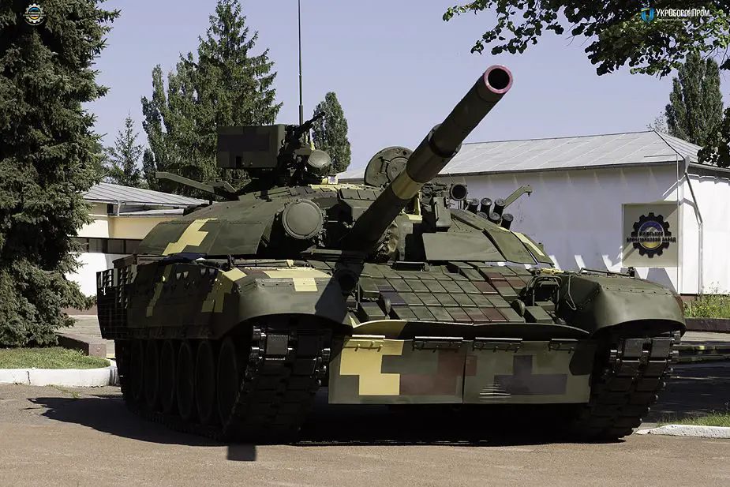

Ukraińska modernizacja T-72 - T-72AMT
Polska propozycja modernizacji PT-91 Twardego - PT-91M2
Rosyjska modernizacja T-80B - T-80BWM
Rosyjska modernizacja T-90A - T-90M Proryw-3
Film przedstawiający działanie karuzeli automatu ładowania w czołgu T-80